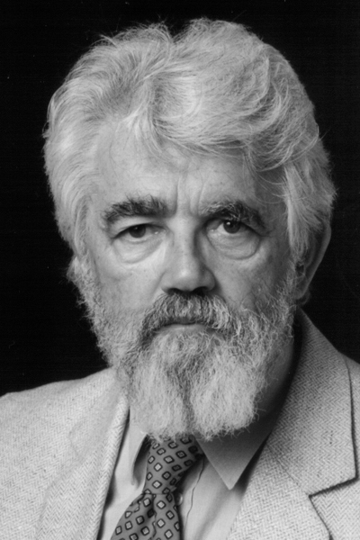

|  |
1971 год John McCarthy (1927-2011) «Лекция доктора McCarthy "The Present State of Research on Artificial Intelligence" охватывает область в которой он добился наибольшего признания своей работы» |
Страна: США
Образование: Доктор философии в области математики, Принстонский университет, 1951
О лауреате
ohn McCarthy является один из родоначальников искусственного интеллекта. В 1955 году он предложил термин «Искусственный интеллект», а летом 1956 года организовал Дартмутскую конференцию по вопросам ИИ. McCarthy отстаивал использование математической логики для искусственного интеллекта. В 1958 году он предложил систему «принятия советов», которая позже вдохновила работы по ответам на запросы и логическому программированию. В этом же году он изобрел язык программирования Lisp, который вскоре стал стандартным языком программирования для приложения с искусственным интеллектом. John McCarthy был первым, кто предложил идею распределенных вычислений, которая гласила что, в будущем технология разделения машинного времени может привести к тому, что вычислительные мощности и даже некоторые приложения могут предоставляться пользователю как вода или электричество.
Ключевые слова: Artificial Intelligence, Lisp, Circumscription, Situation calculus
Краткая библиография
| 1. |
McCarthy, J. 1959. "Programs with Common Sense" at the Wayback Machine (archived October 4, 2013). In Proceedings of the Teddington Conference on the Mechanization of Thought Processes, 756-91. London: Her Majesty's Stationery Office. |
| 2. |
McCarthy, J. 1960. "Recursive functions of symbolic expressions and their computation by machine" at the Wayback Machine (archived October 4, 2013). Communications of the ACM 3(4):184-195. |
| 3. |
McCarthy, J., and Hayes, P. J. 1969. Some philosophical problems from the standpoint of artificial intelligence at the Wayback Machine (archived August 25, 2013). In Meltzer, B., and Michie, D., eds., Machine Intelligence 4. Edinburgh: Edinburgh University Press. 463-502. |
| 4. |
McCarthy, J. 1977. "Epistemological problems of artificial intelligence". In IJCAI, 1038-1044. |
| 5. |
McCarthy, J. 1980. "Circumscription: A form of non-monotonic reasoning". Artificial Intelligence 13(1-2):23-79. |
| 6. |
McCarthy, J. 1986. "Applications of circumscription to common sense reasoning". Artificial Intelligence 28(1):89-116. |
| 7. |
McCarthy, J. 1990. "Generality in artificial intelligence". In Lifschitz, V., ed., Formalizing Common Sense. Ablex. 226-236. |
| 8. |
McCarthy, J. 2002. "Actions and other events in situation calculus". In Fensel, D.; Giunchiglia, F.; McGuinness, D.; and Williams, M., eds., Proceedings of KR-2002, 615-628. |